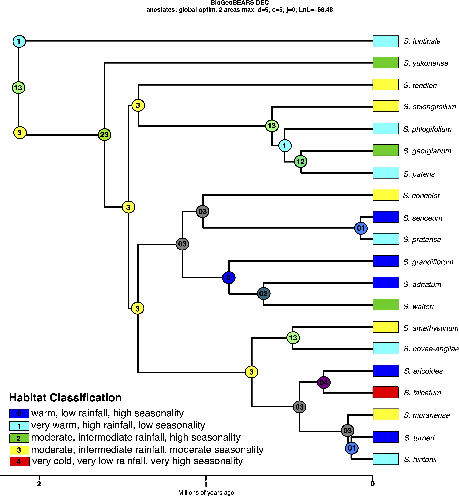
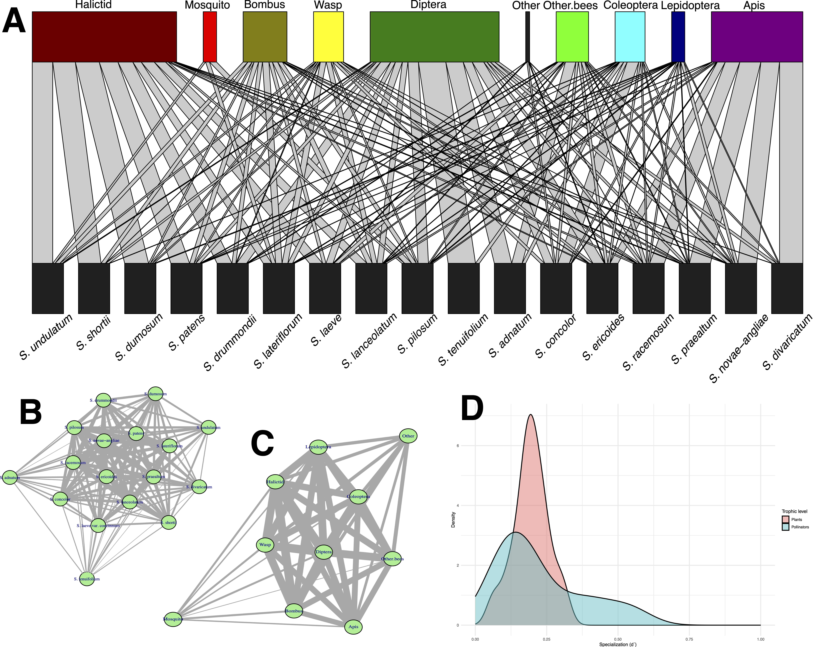

Research
My research integrates genomic, molecular, and bioinformatic approaches to investigate species delimitation, historical biogeography, and diversification in the genus Symphyotrichum. I employ phylogenomic, population genomic, and comparative evolutionary methods to reconstruct species relationships and understand demographic history and the processes shaping lineage diversification. Building on this work, I have expanded my research to examine morphological evolution and the ecological drivers of plant–pollinator interactions by integrating morphometric analyses, multivariate statistics, and floral chemotaxonomy, linking genomic and phenotypic variation to ecological processes.
FIELDS OF RESEARCH
1. PHYLOGENOMICS AND BIOGEOGRAPHY IN PLANT DIVERSIFICATION (published in American Journal of Botany)
My research seeks to understand how historical climate change, geographic processes, and ecological evolution have shaped the diversification and distribution of plant lineages. By integrating phylogenomics, historical biogeography, divergence-time estimation, and ecological niche modeling, I investigate the evolutionary mechanisms responsible for generating biodiversity across space and time. My goal is to develop predictive frameworks that connect evolutionary history with the environmental processes driving diversification. My recent research focused on resolving one of the classic biogeographic questions in North American biogeography: the eastern North America–Mexico floristic disjunction. Using Symphyotrichum (Asteraceae) as a model system, I generated the first densely sampled phylogenomic framework for the genus by combining target-capture sequencing with species-tree inference, divergence dating, ancestral range reconstruction, and paleoclimatic niche modeling. This integrative approach enabled me to reconstruct both the evolutionary relationships and the historical biogeography of a diverse temperate plant lineage. My analyses demonstrated that diversification within the focal lineage occurred primarily during the Pleistocene, rather than the Miocene as previously proposed. Biogeographic reconstruction indicated that repeated glacial cycles created temporary habitat corridors connecting eastern North America and Mexico, followed by vicariance as climates shifted and suitable habitats became fragmented (Figure 1). By integrating genomic evidence with reconstructed paleoclimates, this work showed that climate-driven range dynamics, rather than repeated long-distance dispersal, best explain the origin of this widespread floristic disjunction.
Beyond addressing a longstanding biogeographic question, this research demonstrates the value of combining multiple analytical approaches to investigate evolutionary history. Integrating phylogenomic inference with ecological and biogeographic modeling provides a more comprehensive understanding of diversification than any single method alone, allowing evolutionary hypotheses to be tested within explicit temporal and environmental contexts.

2. EVOLUTIONARY DRIVERS OF PLANT DIVERSIFICATION (published in Plant Systematics and Evolution)
My research seeks to understand how ecological and evolutionary processes interact to generate plant diversity. I examined how morphology, environment, and evolutionary history contribute to species diversification within a recent plant radiation. By combining morphometric analyses, phylogenetic comparative methods, environmental niche characterization, and ancestral habitat reconstruction, I evaluated the relative roles of phylogenetic history and ecological adaptation in shaping phenotypic diversity. My analyses revealed that while species are both morphologically and ecologically distinct, overall morphology and environmental niche exhibit limited phylogenetic conservatism. Instead, repeated habitat shifts and convergent evolution have been major drivers of diversification, highlighting the importance of ecological adaptation over shared ancestry in shaping phenotypic evolution (Figure 2).

3. POLLINATION ASSEMBLAGES AND FLORAL SCENT (manuscript in preparation)
Morphological data, pollinator visitation, and gas chromatography–mass spectrometry (GC-MS) data were used to investigate the evolution of biotic interactions and pollinator attractants. This pollination biology project is important because the sunflower family is remarkably understudied in terms of pollinator interactions despite its widespread occurrence. Here, my overarching goal is to test the general hypothesis that pollination in the sunflower family is generalist by measuring specialization, including the use of sophisticated interaction network techniques. My research observed significant differences in pollinator assemblages in both diversity and abundance structure across Symphyotrichum despite the proximity of collection sites and similar available pollinator species. Insect visitors such as Bombus, halictids, dipterans, and coleopterans showed significant phylogenetic structure, reflecting closely related species that have similar visitation by these visitors (Figure 3A).
High centrality was observed in the plant–plant and insect–insect interaction networks, with low connectivity for only a few taxa (Figure 3B–C). Species- and network-level specialization analyses suggested neither complete generalization nor complete specialization between Symphyotrichum species and their insect visitors (Figure 3D). The proportion of pollinator visitation showed no clear relationship with the measured morphological variables. Floral scent analysis also revealed substantial differences in floral VOC composition across sampled taxa.

FUTURE RESEARCH DIRECTIONS
As I continue developing my research program, I aim to expand these integrative approaches to investigate how geological history, climatic change, and ecological niche evolution interact to shape plant diversification across diverse lineages. Advances in phylogenomics and computational biology now allow increasingly sophisticated integration of genomic, environmental, and spatial data, providing unprecedented opportunities to understand the processes that generate biodiversity. By combining comparative phylogenomics with quantitative biogeographic and ecological analyses, I seek to develop a predictive understanding of how plant lineages diversify and respond to environmental change across evolutionary timescales. My long-term goal is to establish an interdisciplinary research program that bridges evolutionary biology, systematics, and biogeography to address fundamental questions about the origin and maintenance of plant diversity. Equally important, I am committed to training students in integrative evolutionary research by combining fieldwork, herbarium studies, genomics, bioinformatics, and quantitative analyses to prepare the next generation of plant evolutionary biologists.